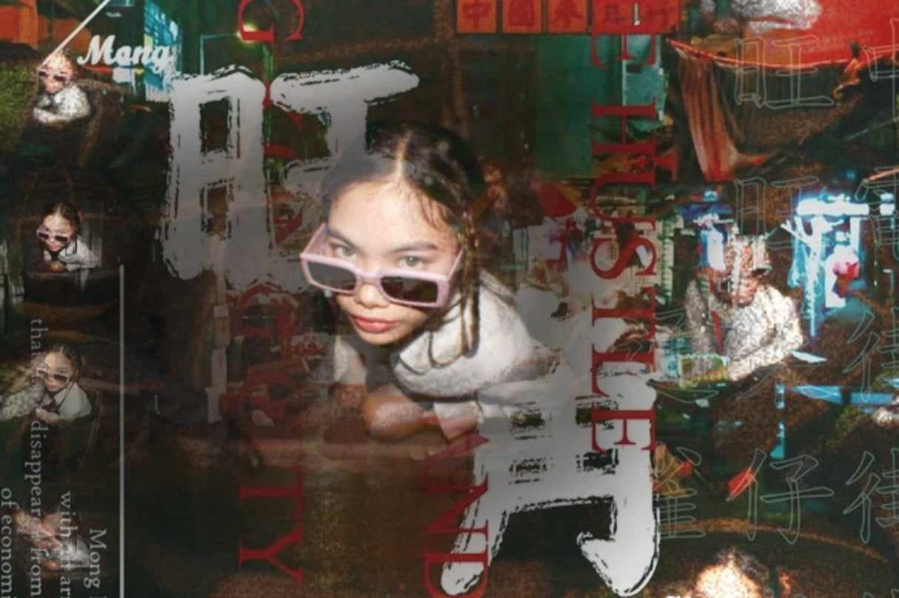
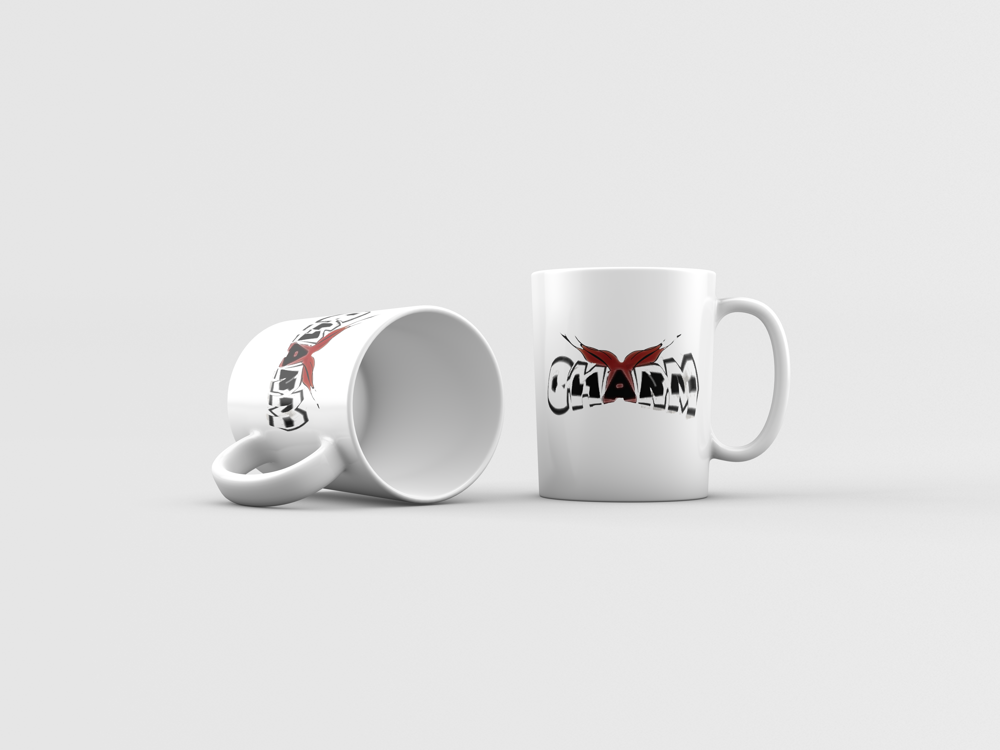

Multimedia Arts Student | Animator | Digital Film Enthusiast
Charisse Manalansan
As a dedicated multimedia arts student at FEU Tech, I have developed a strong foundation in animation, digital film, and creative design. I am passionate about using my skills to create visually engaging content, blending creativity with technical expertise. I also run a Y2K-inspired clothing brand called Charm, where I explore my artistic vision through fashion and brand identity. Eager to continue learning and contributing to projects that challenge my abilities, I am excited to bring my unique perspective to the professional world.
Contest
Sep 2024 - Oct 2024I participated in a 24-hour animation challenge with my group, where we tackled the theme of Artificial Intelligence. This intense, time-constrained project pushed us to creatively interpret AI concepts and integrate them into our animation. The experience sharpened my teamwork, technical problem-solving, and creativity under pressure, further enhancing my ability to work on complex projects. I am excited to bring these skills and experiences to the professional world.
Filming
Jan 2024 - May 2024I have been actively involved in digital film projects, contributing to various content shared on a Facebook page. These projects have allowed me to further explore my passion for storytelling and visual media, while engaging with a wider audience through social platforms.
Education
FEU Institute of Technology
The Bachelor of Multimedia Arts with specialization in Animation and Digital Film
2023 - PresentI am currently pursuing a Bachelor of Multimedia Arts with a specialization in Animation and Digital Film at FEU Institute of Technology. This program is providing me with a comprehensive education in both the technical and creative aspects of multimedia, focusing on the principles of animation and the art of digital filmmaking. Through hands-on projects and collaborations, I am developing a diverse skill set in visual storytelling, character design, and digital content creation. I look forward to continuing to hone my craft and explore new ways to bring my creative vision to life.
St. Augustine Academy of Pampanga
"SHS" Information and Communication Technologies (ICTs)
2021 - 2023I completed my senior high school education at St. Augustine Academy of Pampanga, where I take the Strand in Information and Communication Technologies (ICTs). This program equipped me with foundational knowledge in technology, programming, and digital tools, which sparked my interest in multimedia and digital design. The skills I developed during this time continue to support my work in animation and digital film as I pursue my passion for creative content creation.
St. Augustine Academy of Pampanga
Junior High School
2017 - 2021I completed my junior high school education at St. Augustine Academy of Pampanga from 2017 to 2021. During this time, I received a well-rounded education that laid the foundation for my future studies in Information and Communication Technologies (ICTs) and multimedia arts. My experiences in junior high school fostered my curiosity and interest in technology and creative design, guiding my passion for animation and digital film.
TOP 3 OF MY WORKS
Magazine
Book Cover

Mockups
What I’m Up To
Currently, I’m immersed in my studies at FEU Institute of Technology, pursuing a Bachelor of Multimedia Arts with a specialization in Animation and Digital Film. I began this exciting journey in 2023, where I’m honing my skills in creative content creation and digital storytelling. In addition to my coursework, I'm actively participating in various projects. Recently, I joined a 24-hour animation event with my group, where we collaborated to create an engaging animated piece. This experience not only sharpened my animation skills but also fostered teamwork and creativity under pressure. I'm also engaging with the digital film community on various Facebook pages, contributing to discussions and sharing insights about the latest trends in film and animation. This has helped me stay connected with fellow creatives and expand my knowledge in the field. Through these experiences, I'm not just learning; I'm applying my skills in real-world scenarios and building a network of like-minded individuals passionate about multimedia arts.